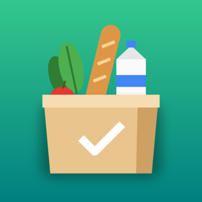

RaSh DashYour family's shopping, store by store.
RaSh Dash keeps your family's shopping lists, to-dos and returns in one place, sorted by the store you buy each thing at, and syncs them through iCloud to everyone you share with.
- Lists by store: every item remembers where you buy it, so lists group themselves by store, and each store has its own page.
- At the store: walk in and RaSh Dash shows what to get there. Group stores of a kind so they share one list.
- Add things fast: say several items at once, scan a barcode, or add back anything from your history in a tap.
- Home Screen widget: the store you're at, or any list, with things to check off right there.
- Returns, receipts and to-dos: return-by countdowns, scanned receipts, and to-dos with due dates on a calendar.
- Family sharing: invite family members through iCloud. Everyone can add, check off and edit, and changes sync automatically.